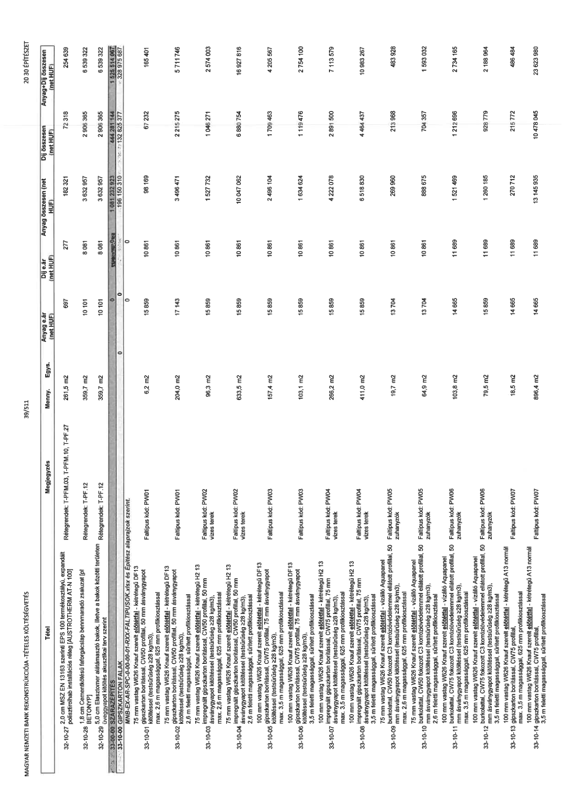

| Tétel | Megjegyzés | Menny. | Egys. | Anyag e.ár (net HUF) | Díj e.ár (net HUF) | Anyag összesen (net HUF) | Díj összesen (net HUF) | Anyag+Díj összesen (net HUF) |
|---|---|---|---|---|---|---|---|---|
| 32-10-27 | 2,0 cm MSZ EN 13163 szerinti EPS 100 termékszigetelés, expandált polisztirolhab installációs réteg (AUSTROTHERM AT-N 100). Rétegrendek: T-PFM.03, T-PFM.10, T-PF.27 | 251,5 | m2 | 725 | 288 | 182 321 | 72 318 | 254 639 |
| 32-10-28 | 1,8 cm Cementkötésű faforgácslap bennmaradó zsaluzat (pl BETONYP). Rétegrendek: T-PF.12 | 359,7 | m2 | 10 101 | 8 081 | 3 632 957 | 2 906 365 | 6 539 322 |
| 32-10-29 | 5,0 cm Elasztomer alátámasztó bakok, illetve a bakok közötti területen üveggyapot kitöltés akusztikai terv szerint. Rétegrendek: T-PF.12 | 359,7 | m2 | 10 101 | 8 081 | 3 632 967 | 2 906 365 | 6 539 332 |
| 33-00-00 | SZÁRAZÉPÍTÉS | NaN | NaN | 0 | 0 | 0 | 0 | 0 |
| 33-10-00 | GIPSZKARTON FALAK | NaN | NaN | 0 | 0 | 0 | 0 | 0 |
| 33-10-01 | MNB-EX-AR-SPC-D-00-00-01--R_RK-FAL TÍPUSOK_vhur és Építész alaprajzok szerint. 75 mm vastag W626 Knauf szerelt előtétfal - kétrétegű DF13 gipszkarton borítással, CW50 profillal, 50 mm ásványgyapot kitöltéssel (testsűrűség ≥28 kg/m3), max. 2,6 m magassággal, 625 mm profilkiosztással. Faltípus kód: PW01 | 6,2 | m2 | 15 859 | 10 861 | 98 169 | 67 232 | 165 401 |
| 33-10-02 | 75 mm vastag W626 Knauf szerelt előtétfal - kétrétegű DF13 gipszkarton borítással, CW50 profillal, 50 mm ásványgyapot kitöltéssel (testsűrűség ≥28 kg/m3), max. 2,6 m magassággal, sűrített profilkiosztással, 2,6 m feletti magassággal, sűrített profilkiosztással. Faltípus kód: PW01 | 204,0 | m2 | 17 143 | 10 861 | 3 496 471 | 2 215 275 | 5 711 746 |
| 33-10-03 | 75 mm vastag W626 Knauf szerelt előtétfal - kétrétegű H2 13 impregnált gipszkarton borítással, CW50 profillal, 50 mm ásványgyapot kitöltéssel (testsűrűség ≥28 kg/m3), max. 2,6 m magassággal, 625 mm profilkiosztással. Faltípus kód: PW02 vizes terek | 96,3 | m2 | 15 859 | 10 861 | 1 527 732 | 1 046 271 | 2 574 003 |
| 33-10-04 | 75 mm vastag W626 Knauf szerelt előtétfal - kétrétegű H2 13 impregnált gipszkarton borítással, CW50 profillal, 50 mm ásványgyapot kitöltéssel (testsűrűség ≥28 kg/m3), 2,6 m feletti magassággal, sűrített profilkiosztással. Faltípus kód: PW02 vizes terek | 633,5 | m2 | 15 859 | 10 861 | 10 047 062 | 6 880 754 | 16 927 816 |
| 33-10-05 | 100 mm vastag W626 Knauf szerelt előtétfal - kétrétegű DF13 gipszkarton borítással, CW75 profillal, 75 mm ásványgyapot kitöltéssel (testsűrűség ≥28 kg/m3), max. 3,5 m magassággal, 625 mm profilkiosztással. Faltípus kód: PW03 | 157,4 | m2 | 15 859 | 10 861 | 2 495 104 | 1 709 463 | 4 204 567 |
| 33-10-06 | 100 mm vastag W626 Knauf szerelt előtétfal - kétrétegű DF13 gipszkarton borítással, CW75 profillal, 75 mm ásványgyapot kitöltéssel (testsűrűség ≥28 kg/m3), 3,5 m feletti magassággal, sűrített profilkiosztással. Faltípus kód: PW03 | 103,1 | m2 | 15 859 | 10 861 | 1 634 624 | 1 119 476 | 2 754 100 |
| 33-10-07 | 100 mm vastag W626 Knauf szerelt előtétfal - kétrétegű H2 13 impregnált gipszkarton borítással, CW75 profillal, 75 mm ásványgyapot kitöltéssel (testsűrűség ≥28 kg/m3), max. 3,5 m magassággal, 625 mm profilkiosztással. Faltípus kód: PW04 vizes terek | 266,2 | m2 | 15 859 | 10 861 | 4 222 078 | 2 891 500 | 7 113 578 |
| 33-10-08 | 100 mm vastag W626 Knauf szerelt előtétfal - kétrétegű H2 13 impregnált gipszkarton borítással, CW75 profillal, 75 mm ásványgyapot kitöltéssel (testsűrűség ≥28 kg/m3), 3,5 m feletti magassággal, sűrített profilkiosztással. Faltípus kód: PW04 vizes terek | 411,0 | m2 | 15 859 | 10 861 | 6 518 830 | 4 464 437 | 10 983 267 |
| 33-10-09 | 75 mm vastag W626 Knauf szerelt előtétfal - vízálló Aquapanel burkolattal, CW50 fokozott C3 korrózióvédelemmel ellátott profillal, 50 mm ásványgyapot kitöltéssel (testsűrűség ≥28 kg/m3), max. 2,6 m magassággal, 625 mm profilkiosztással. Faltípus kód: PW05 zuhanyzók | 19,7 | m2 | 13 704 | 10 861 | 269 960 | 213 958 | 483 928 |
| 33-10-10 | 75 mm vastag W626 Knauf szerelt előtétfal - vízálló Aquapanel burkolattal, CW50 fokozott C3 korrózióvédelemmel ellátott profillal, 50 mm ásványgyapot kitöltéssel (testsűrűség ≥28 kg/m3), 2,6 m feletti magassággal, sűrített profilkiosztással. Faltípus kód: PW05 zuhanyzók | 64,9 | m2 | 13 704 | 10 861 | 888 675 | 704 357 | 1 593 032 |
| 33-10-11 | 100 mm vastag W626 Knauf szerelt előtétfal - vízálló Aquapanel burkolattal, CW75 fokozott C3 korrózióvédelemmel ellátott profillal, 50 mm ásványgyapot kitöltéssel (testsűrűség ≥28 kg/m3), max. 3,5 m magassággal, 625 mm profilkiosztással. Faltípus kód: PW06 zuhanyzók | 103,8 | m2 | 14 665 | 11 689 | 1 521 469 | 1 212 696 | 2 734 165 |
| 33-10-12 | 100 mm vastag W626 Knauf szerelt előtétfal - vízálló Aquapanel burkolattal, CW75 fokozott C3 korrózióvédelemmel ellátott profillal, 50 mm ásványgyapot kitöltéssel (testsűrűség ≥28 kg/m3), 3,5 m feletti magassággal, sűrített profilkiosztással. Faltípus kód: PW06 zuhanyzók | 79,5 | m2 | 15 859 | 11 689 | 1 260 185 | 928 779 | 2 188 964 |
| 33-10-13 | 100 mm vastag W626 Knauf szerelt előtétfal - kétrétegű A13 normál gipszkarton borítással, CW75 profillal, max. 3,5 m magassággal, 625 mm profilkiosztással. Faltípus kód: PW07 | 18,5 | m2 | 14 665 | 11 689 | 270 712 | 215 772 | 486 484 |
| 33-10-14 | 100 mm vastag W626 Knauf szerelt előtétfal - kétrétegű A13 normál gipszkarton borítással, CW75 profillal, 3,5 m feletti magassággal, sűrített profilkiosztással. Faltípus kód: PW07 | 896,4 | m2 | 14 665 | 11 689 | 13 145 935 | 10 478 045 | 23 623 980 |
